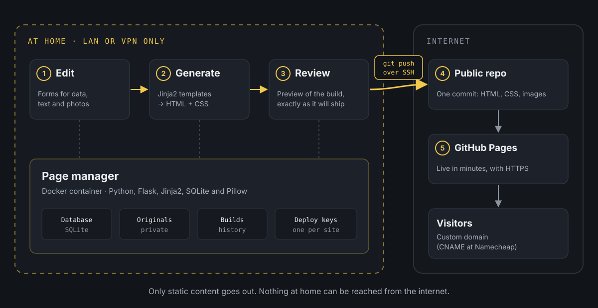

A CMS that never leaves home.
I've been collecting editions of The Hobbit in different languages for years, and until recently the collection's website lived on a Google Site. It worked, but it was far from flexible. Every time a new book arrived I had to duplicate blocks, upload photos, tweak text by hand and pray that nothing got out of place. For something I want to keep up to date, it was far too much manual work.
The dilemma
The logical alternative was to set up a CMS. The problem is that it means having a server published on the internet, and I didn't want to open my home server to the outside world. Besides, to be honest, I didn't need anything complex: a website with a list, some detail pages and a handful of other pages. Then I got carried away and kept adding a bunch of features as they occurred to me, but they all keep the same foundation: everything simple at the destination, even if the local backend gets more complicated.
I was also put off by the constant trickle of vulnerabilities in the best-known CMSs and in any solution with a public backend. One outdated plugin, one exposed admin panel, and you've got a problem. For a personal website, keeping up with patches just wasn't worth it.
The middle ground
So I built something tailored to me, halfway between the two: my own page manager.
It's a dockerized app (Python with Flask, Jinja2 templates and a SQLite database) that runs on my server and isn't published on the internet. It can only be reached from my local network or over VPN, which is why it doesn't even have a login. It acts as the backend for everything I need:
- Creating, editing and deleting the different entities of each website (on the Hobbit one: editions, languages, photos...).
- The website's text, so I can change it without touching code.
- The decorative images and the rest of the pieces that make up each page. I upload photos straight from my phone, and the app resizes them, converts them to WebP and strips their metadata, GPS location included.
With that data and a set of templates designed for each website, the app generates the site in HTML and CSS. What gets published has no JavaScript, except for the cookie notice. The filters, the tabs and the photo viewer are all done with CSS alone.
The system was born to serve the book collection, but over time it has ended up managing this very website too. The same app works as the backend and the generator for several websites (two for now). The future is uncertain, but promising. Each type of website is a module with its own tables, forms and templates, and the core provides everything they share (text, images, builds and publishing), so adding a new website doesn't mean touching the rest.
How the flow works

When I want to publish a change, this is the process:
- I edit whatever I need from the page manager (a new book, a photo, some text).
- I generate a version. The app “compiles” the website into a new folder and shows me a preview, like a clickable mockup. Since every path is relative, it looks the same in the preview as on the final domain.
- If I like how it looks, I hit publish.
- The app commits and pushes to a public GitHub repository over SSH, using a deploy key that only has permission on that repository.
- The repository has GitHub Pages turned on with a custom domain. GitHub picks up the change and within a couple of minutes the website is updated.
Every build is kept in a history, so rolling back is as easy as publishing an earlier one.
Publishing without tokens: deploy keys
To let the app write to GitHub, I don't use a personal token, which would give access to my whole account. Each website has its own deploy key, an SSH key that is added to a single repository with write access. If it ever leaked, the worst that could happen is someone publishing to that website, not touching the rest of my repositories.
The app generates the key itself from each website's settings. What it does under the hood is equivalent to this:
ssh-keygen -t ed25519 -N "" -C "webmaster-hobbits" -f /data/claves/hobbits/id_ed25519The public part (id_ed25519.pub) is pasted into GitHub, under the repository's Settings → Deploy keys, ticking Allow write access. The private key never leaves the server.
Publishing is, in essence, this:
# Copy the build to a temporary foldercp -r /data/builds/hobbits/20261029-163000 /tmp/publicarcd /tmp/publicar echo "hobbits.manuelcernuda.net" > CNAMEtouch .nojekyll git init -b maingit add -Agit commit -m "Publish 20261029-163000" GIT_SSH_COMMAND="ssh -i /data/claves/hobbits/id_ed25519 -o IdentitiesOnly=yes" \ git push --force git@github.com:manuelcernuda/hobbiton.git mainA detail I like: every publish is a single commit, pushed with --force. The repository keeps no history, it always reflects exactly what is published, and whatever I remove from the website disappears from the repo too. The real history lives in the app's builds.
The .nojekyll file tells GitHub Pages not to process anything and to serve the files as they are.
Custom domain on GitHub Pages
The repository's CNAME file is what tells GitHub Pages which domain to serve the website on. Since every push replaces all the content, the app writes it again on every publish. Without it, GitHub would lose the domain configuration.
In the DNS (Namecheap, in my case) only two records are needed:
Type Host ValueCNAME hobbits manuelcernuda.github.io.TXT _github-pages-challenge-manuelcernuda <code provided by GitHub>The CNAME points the subdomain to GitHub Pages, and the TXT is used to verify on GitHub that the domain is mine, so nobody else can use it on their Pages.
To check that the DNS already resolves:
dig +short hobbits.manuelcernuda.netIt should return manuelcernuda.github.io. followed by GitHub's IPs. Then, under the repository's Settings → Pages, you tick Enforce HTTPS and GitHub takes care of the certificate.
What's in the public repository
This is the only thing that reaches the internet (simplified):
hobbiton/├── CNAME├── .nojekyll├── index.html├── 404.html├── traducciones/ one folder with its index.html per entry├── ediciones/├── assets/│ ├── style.css│ ├── fuentes/│ ├── banderas/│ └── img/└── fotos/HTML, CSS, already processed images and the fonts, which are copied into each website so nothing loads from external servers. No database, no backend code, no credentials and no original photos.
Why I like it
It's convenient, because I manage the information through forms and don't have to fight with the layout every time I change something.
It's lightweight, because what gets published is static files. They load fast and GitHub takes care of the hosting, for free.
And it's secure, because nothing of mine is exposed to the outside. The only thing reachable from the internet is HTML pages. If someone wants to attack something, they'll find plain files.
In short, I get the flexibility of a backend without laying anything out by hand and without the risks of having it published. And yes, the blog you're reading this on comes out of it too.
From the page manager at home to GitHub Pages